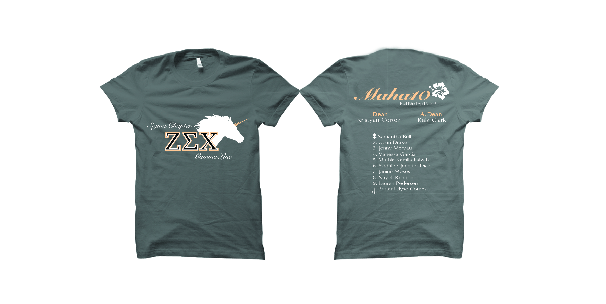
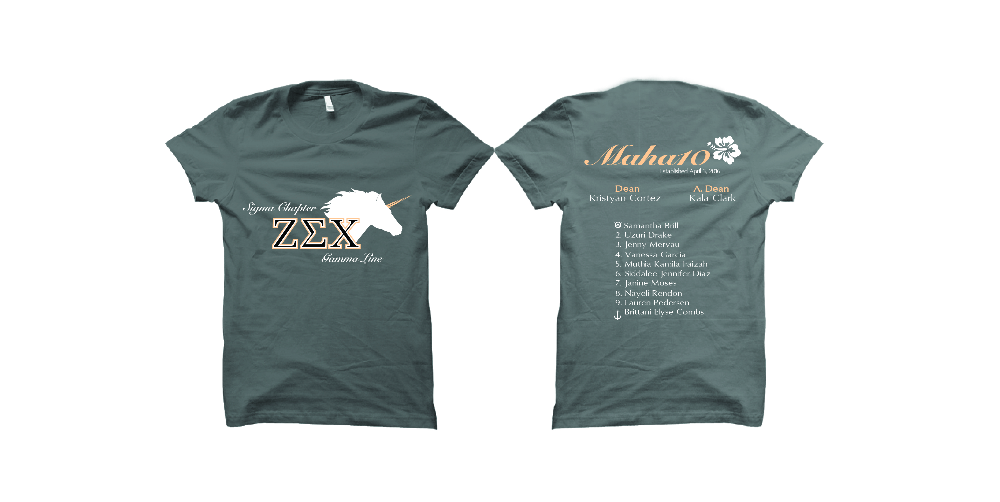
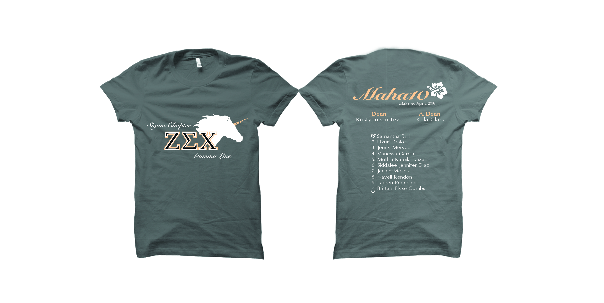

Shirt Designs
 

Floral Feelings is an application prototype that monitors the users emotions. The application represents users input by creating a petal that coordinates to the emotion and is sized by the extent the user is feeling that emotion on a scale of 1-10. The petals are displayed radially around a circle based on the current time. Previous days are recorded for the user so that trends in emotions can be recorded for the user. When certain emotions reach past a certain range, the user can create notifications that suggest activities to help reduce negative emotions.
A flyer created to display the speaker events that will be held. The information is layed out so that times and dates of events are easy to find.
Frack is an educational, multiplayer game meant to teach people about fracking. I collaborated with a team of Computer Scientists to make graphics that would work with the game's coding and function. I had creative freedom with the visuals for the game, so I decided to go in the direction of a dark, apocalyptic theme.
Reckless is a local board shop that needed some advertisements to be mailed out. The company did not have a logo so I created something to show for the flyer. I was told to have fun experimenting with the design and this was the final result that the client was happy with.
To advertise for the SAA event, Pajamarino!, I was given the task to design a Snapchat filter. The tradition of this event is that students arrive at the train station and greet alumni in their pajamas. I tried to make a filter that incorporated these two aspects in a fun way. The filter was viewed over 15,000 times and shared over 200 times.
I made these icons to be used on the CHSSP website. The icons serve as links to direct visiters to resources that will help students with writing essays.
These flyers were for a Save the Date Event.
This was a flyer for a series of workshops to teach the new Framework. The events are held for teachers that can choose to attend in order to update their curriculum. The goal was to try and get as many teachers interested as possible.

I was given the task to design a cover for CHSSP's magazine "The Source". The theme for the month was "The Role of the Media". I decided to combined a newspaper and the American flag pattern as the newsprint.